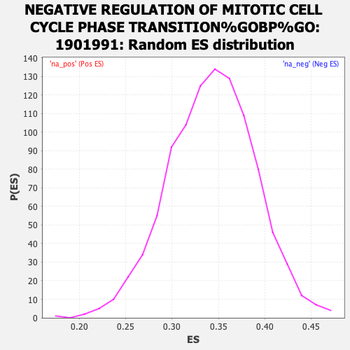

| | | Dataset | expr_RNAseq_ranks |
| Phenotype | NoPhenotypeAvailable |
| Upregulated in class | na_neg |
| GeneSet | NEGATIVE REGULATION OF MITOTIC CELL CYCLE PHASE TRANSITION%GOBP%GO:1901991 |
| Enrichment Score (ES) | -0.27902555 |
| Normalized Enrichment Score (NES) | NaN |
| Nominal p-value | NaN |
| FDR q-value | 1.0 |
| FWER p-Value | 0.0 |
Table: GSEA Results Summary
 Fig 1: Enrichment plot: NEGATIVE REGULATION OF MITOTIC CELL CYCLE PHASE TRANSITION%GOBP%GO:1901991
Fig 1: Enrichment plot: NEGATIVE REGULATION OF MITOTIC CELL CYCLE PHASE TRANSITION%GOBP%GO:1901991
Profile of the Running ES Score & Positions of GeneSet Members on the Rank Ordered List
| PROBE | GENE SYMBOL | GENE_TITLE | RANK IN GENE LIST | RANK METRIC SCORE | RUNNING ES | CORE ENRICHMENT | | 1 | C5orf45 | | | 781 | 4.608 | -0.0139 | No |
| 2 | CDK5RAP3 | | | 1136 | 3.960 | -0.0097 | No |
| 3 | BTG2 | | | 1539 | 3.434 | -0.0109 | No |
| 4 | FHL1 | | | 1883 | 3.091 | -0.0110 | No |
| 5 | RGCC | | | 1959 | 3.027 | 0.0021 | No |
| 6 | SLFN11 | | | 2094 | 2.914 | 0.0117 | No |
| 7 | KLHL22 | | | 2544 | 2.604 | 0.0034 | No |
| 8 | ATM | | | 2800 | 2.441 | 0.0041 | No |
| 9 | TEX14 | | | 2820 | 2.431 | 0.0168 | No |
| 10 | FOXN3 | | | 3340 | 2.161 | 0.0025 | No |
| 11 | PLAGL1 | | | 3805 | 1.942 | -0.0102 | No |
| 12 | RPA2 | | | 3952 | 1.870 | -0.0072 | No |
| 13 | KANK2 | | | 4060 | 1.813 | -0.0025 | No |
| 14 | DACT1 | | | 4188 | 1.767 | 0.0010 | No |
| 15 | FBXL7 | | | 4510 | 1.654 | -0.0061 | No |
| 16 | FBXO31 | | | 4563 | 1.633 | 0.0004 | No |
| 17 | PSMC3 | | | 4897 | 1.509 | -0.0080 | No |
| 18 | GPR132 | | | 4996 | 1.473 | -0.0048 | No |
| 19 | PTEN | | | 5116 | 1.432 | -0.0028 | No |
| 20 | JADE1 | | | 5190 | 1.410 | 0.0014 | No |
| 21 | ZNF830 | | | 5222 | 1.394 | 0.0077 | No |
| 22 | BAX | | | 5287 | 1.376 | 0.0121 | No |
| 23 | E2F4 | | | 5544 | 1.302 | 0.0064 | No |
| 24 | AURKB | | | 5606 | 1.285 | 0.0105 | No |
| 25 | FAM107A | | | 5643 | 1.271 | 0.0158 | No |
| 26 | CDC20 | | | 5730 | 1.245 | 0.0184 | No |
| 27 | TICRR | | | 5929 | 1.185 | 0.0150 | No |
| 28 | PSMB9 | | | 5951 | 1.179 | 0.0205 | No |
| 29 | FBXO5 | | | 5979 | 1.171 | 0.0257 | No |
| 30 | PSMB10 | | | 6022 | 1.158 | 0.0301 | No |
| 31 | PSMD13 | | | 6118 | 1.134 | 0.0316 | No |
| 32 | PLK3 | | | 6467 | 1.041 | 0.0197 | No |
| 33 | CDK4 | | | 6538 | 1.023 | 0.0219 | No |
| 34 | MAD1L1 | | | 6640 | 1.002 | 0.0224 | No |
| 35 | CHEK2 | | | 6688 | 0.990 | 0.0256 | No |
| 36 | RBL1 | | | 6746 | 0.975 | 0.0281 | No |
| 37 | CNOT10 | | | 6912 | 0.941 | 0.0250 | No |
| 38 | RFWD3 | | | 7121 | 0.893 | 0.0194 | No |
| 39 | PRMT2 | | | 7377 | 0.836 | 0.0111 | No |
| 40 | PRKDC | | | 7407 | 0.830 | 0.0143 | No |
| 41 | GTSE1 | | | 7410 | 0.829 | 0.0189 | No |
| 42 | PML | | | 7663 | 0.775 | 0.0104 | No |
| 43 | CDK2 | | | 7676 | 0.771 | 0.0141 | No |
| 44 | PKD2 | | | 7698 | 0.768 | 0.0173 | No |
| 45 | PSMD9 | | | 7736 | 0.758 | 0.0197 | No |
| 46 | PSMC4 | | | 7850 | 0.732 | 0.0181 | No |
| 47 | IK | | | 7936 | 0.713 | 0.0177 | No |
| 48 | PINX1 | | | 8320 | 0.637 | 0.0018 | No |
| 49 | RQCD1 | | | 8378 | 0.623 | 0.0024 | No |
| 50 | CDC6 | | | 8386 | 0.620 | 0.0055 | No |
| 51 | GPNMB | | | 8502 | 0.597 | 0.0030 | No |
| 52 | PLK1 | | | 8563 | 0.585 | 0.0033 | No |
| 53 | BUB1 | | | 8672 | 0.569 | 0.0009 | No |
| 54 | CASP2 | | | 8749 | 0.553 | 0.0002 | No |
| 55 | CDKN2C | | | 8810 | 0.542 | 0.0002 | No |
| 56 | CCND1 | | | 8843 | 0.536 | 0.0015 | No |
| 57 | PSMD3 | | | 8901 | 0.526 | 0.0016 | No |
| 58 | E2F1 | | | 9038 | 0.502 | -0.0025 | No |
| 59 | EP300 | | | 9172 | 0.478 | -0.0066 | No |
| 60 | MYO16 | | | 9249 | 0.465 | -0.0079 | No |
| 61 | PSMB8 | | | 9263 | 0.462 | -0.0059 | No |
| 62 | E2F8 | | | 9461 | 0.428 | -0.0136 | No |
| 63 | CNOT3 | | | 9462 | 0.428 | -0.0112 | No |
| 64 | TRIM39 | | | 9609 | 0.405 | -0.0163 | No |
| 65 | TRIP13 | | | 10002 | 0.347 | -0.0344 | No |
| 66 | ZNF655 | | | 10072 | 0.336 | -0.0360 | No |
| 67 | CHMP4C | | | 10177 | 0.318 | -0.0395 | No |
| 68 | PSMD4 | | | 10216 | 0.311 | -0.0397 | No |
| 69 | TPR | | | 10231 | 0.309 | -0.0387 | No |
| 70 | CENPF | | | 10267 | 0.305 | -0.0387 | No |
| 71 | PSME1 | | | 10329 | 0.297 | -0.0402 | No |
| 72 | BUB1B | | | 10334 | 0.296 | -0.0387 | No |
| 73 | PSMF1 | | | 10491 | 0.275 | -0.0451 | No |
| 74 | BLM | | | 10624 | 0.257 | -0.0504 | No |
| 75 | MRE11A | | | 10668 | 0.252 | -0.0512 | No |
| 76 | MDM2 | | | 10863 | 0.225 | -0.0598 | No |
| 77 | CLSPN | | | 11071 | 0.197 | -0.0692 | No |
| 78 | DCUN1D3 | | | 11202 | 0.181 | -0.0749 | No |
| 79 | MAD2L1 | | | 11305 | 0.169 | -0.0791 | No |
| 80 | ORC1 | | | 11361 | 0.163 | -0.0810 | No |
| 81 | PRMT1 | | | 11715 | 0.114 | -0.0983 | No |
| 82 | TTK | | | 11733 | 0.111 | -0.0986 | No |
| 83 | VPS4A | | | 11851 | 0.098 | -0.1040 | No |
| 84 | PCBP4 | | | 11912 | 0.090 | -0.1065 | No |
| 85 | NACC2 | | | 11944 | 0.085 | -0.1076 | No |
| 86 | CDC25C | | | 11956 | 0.083 | -0.1077 | No |
| 87 | E2F7 | | | 12141 | 0.061 | -0.1168 | No |
| 88 | ARID3A | | | 12305 | 0.045 | -0.1248 | No |
| 89 | PSMD7 | | | 12345 | 0.041 | -0.1266 | No |
| 90 | PSMD8 | | | 12371 | 0.038 | -0.1276 | No |
| 91 | CCNB1 | | | 12389 | 0.036 | -0.1283 | No |
| 92 | CNOT8 | | | 12423 | 0.032 | -0.1298 | No |
| 93 | PSMC5 | | | 12462 | 0.028 | -0.1316 | No |
| 94 | CCL2 | | | 12468 | 0.027 | -0.1317 | No |
| 95 | AURKA | | | 12481 | 0.026 | -0.1321 | No |
| 96 | MAD2L2 | | | 12524 | 0.023 | -0.1341 | No |
| 97 | PSMD11 | | | 12718 | 0.004 | -0.1440 | No |
| 98 | RBL2 | | | 12725 | 0.003 | -0.1442 | No |
| 99 | CDKN1B | | | 12860 | -0.012 | -0.1510 | No |
| 100 | CRADD | | | 12880 | -0.014 | -0.1519 | No |
| 101 | ZFYVE19 | | | 12894 | -0.015 | -0.1525 | No |
| 102 | HMGA2 | | | 12903 | -0.016 | -0.1528 | No |
| 103 | NBN | | | 12931 | -0.020 | -0.1541 | No |
| 104 | MDM4 | | | 12962 | -0.024 | -0.1554 | No |
| 105 | CNOT1 | | | 13017 | -0.029 | -0.1580 | No |
| 106 | PCNA | | | 13059 | -0.034 | -0.1599 | No |
| 107 | SKP1 | | | 13140 | -0.042 | -0.1638 | No |
| 108 | DONSON | | | 13339 | -0.064 | -0.1735 | No |
| 109 | CDKN1A | | | 13360 | -0.066 | -0.1741 | No |
| 110 | SEPT7 | | | 13386 | -0.069 | -0.1750 | No |
| 111 | ZW10 | | | 13414 | -0.073 | -0.1760 | No |
| 112 | TFDP2 | | | 13777 | -0.118 | -0.1938 | No |
| 113 | TOPBP1 | | | 13874 | -0.134 | -0.1979 | No |
| 114 | CARM1 | | | 14013 | -0.152 | -0.2041 | No |
| 115 | CNOT7 | | | 14016 | -0.153 | -0.2033 | No |
| 116 | CDK1 | | | 14062 | -0.159 | -0.2047 | No |
| 117 | CDK6 | | | 14074 | -0.161 | -0.2044 | No |
| 118 | ZFP36L2 | | | 14222 | -0.182 | -0.2109 | No |
| 119 | TAOK2 | | | 14241 | -0.185 | -0.2107 | No |
| 120 | PSMB4 | | | 14269 | -0.189 | -0.2110 | No |
| 121 | ZNF207 | | | 14270 | -0.189 | -0.2100 | No |
| 122 | RAD17 | | | 14314 | -0.198 | -0.2111 | No |
| 123 | TP53 | | | 14444 | -0.218 | -0.2164 | No |
| 124 | RB1 | | | 14521 | -0.230 | -0.2190 | No |
| 125 | CDKN2A | | | 14606 | -0.248 | -0.2219 | No |
| 126 | GLTSCR2 | | | 14679 | -0.262 | -0.2241 | No |
| 127 | BUB3 | | | 14910 | -0.306 | -0.2341 | No |
| 128 | PSMD2 | | | 15011 | -0.323 | -0.2373 | No |
| 129 | CDK2AP2 | | | 15123 | -0.345 | -0.2411 | No |
| 130 | PSMA6 | | | 15302 | -0.381 | -0.2480 | No |
| 131 | PSMA7 | | | 15428 | -0.409 | -0.2521 | No |
| 132 | PSMC2 | | | 15483 | -0.423 | -0.2524 | No |
| 133 | CDKN2D | | | 15778 | -0.493 | -0.2647 | No |
| 134 | APC | | | 15781 | -0.493 | -0.2620 | No |
| 135 | CUL1 | | | 15782 | -0.493 | -0.2592 | No |
| 136 | CNOT6L | | | 15825 | -0.505 | -0.2585 | No |
| 137 | TAOK1 | | | 15974 | -0.544 | -0.2630 | No |
| 138 | PSME3 | | | 16040 | -0.563 | -0.2632 | No |
| 139 | KLF4 | | | 16316 | -0.642 | -0.2736 | No |
| 140 | PSMD5 | | | 16317 | -0.642 | -0.2700 | No |
| 141 | TNKS1BP1 | | | 16344 | -0.650 | -0.2676 | No |
| 142 | ZNF385A | | | 16434 | -0.673 | -0.2684 | No |
| 143 | CNOT2 | | | 16623 | -0.740 | -0.2738 | No |
| 144 | CNOT4 | | | 16679 | -0.758 | -0.2724 | No |
| 145 | MUC1 | | | 16712 | -0.766 | -0.2697 | No |
| 146 | PSMC1 | | | 16758 | -0.782 | -0.2676 | No |
| 147 | PSMB5 | | | 16822 | -0.803 | -0.2663 | No |
| 148 | WEE1 | | | 17073 | -0.890 | -0.2740 | Yes |
| 149 | PSMB7 | | | 17131 | -0.916 | -0.2718 | Yes |
| 150 | ZFP36L1 | | | 17165 | -0.934 | -0.2682 | Yes |
| 151 | TRIAP1 | | | 17297 | -0.984 | -0.2694 | Yes |
| 152 | SOX4 | | | 17351 | -1.004 | -0.2664 | Yes |
| 153 | PSMD6 | | | 17399 | -1.025 | -0.2631 | Yes |
| 154 | TAOK3 | | | 17497 | -1.077 | -0.2620 | Yes |
| 155 | PSMA1 | | | 17537 | -1.096 | -0.2578 | Yes |
| 156 | HUS1 | | | 17589 | -1.120 | -0.2541 | Yes |
| 157 | PSMD1 | | | 17864 | -1.269 | -0.2609 | Yes |
| 158 | USP47 | | | 17870 | -1.274 | -0.2541 | Yes |
| 159 | NAE1 | | | 17895 | -1.285 | -0.2481 | Yes |
| 160 | PSMB1 | | | 17899 | -1.288 | -0.2410 | Yes |
| 161 | PSMB3 | | | 18003 | -1.353 | -0.2386 | Yes |
| 162 | PSMB2 | | | 18017 | -1.360 | -0.2317 | Yes |
| 163 | TFDP1 | | | 18064 | -1.387 | -0.2262 | Yes |
| 164 | GADD45A | | | 18210 | -1.488 | -0.2252 | Yes |
| 165 | PSME4 | | | 18272 | -1.525 | -0.2198 | Yes |
| 166 | PSMA2 | | | 18382 | -1.607 | -0.2163 | Yes |
| 167 | PSMD14 | | | 18398 | -1.620 | -0.2080 | Yes |
| 168 | PSMD10 | | | 18456 | -1.679 | -0.2015 | Yes |
| 169 | RPL26 | | | 18475 | -1.705 | -0.1928 | Yes |
| 170 | BRD7 | | | 18604 | -1.811 | -0.1892 | Yes |
| 171 | PSME2 | | | 18616 | -1.827 | -0.1795 | Yes |
| 172 | SFN | | | 18629 | -1.838 | -0.1698 | Yes |
| 173 | PSMA4 | | | 18902 | -2.146 | -0.1716 | Yes |
| 174 | CNOT6 | | | 18929 | -2.177 | -0.1607 | Yes |
| 175 | CDKN2B | | | 18942 | -2.192 | -0.1490 | Yes |
| 176 | CNOT11 | | | 19177 | -2.557 | -0.1465 | Yes |
| 177 | PSMC6 | | | 19213 | -2.629 | -0.1336 | Yes |
| 178 | PSMD12 | | | 19252 | -2.698 | -0.1204 | Yes |
| 179 | RPS27L | | | 19375 | -2.953 | -0.1100 | Yes |
| 180 | CDC73 | | | 19500 | -3.290 | -0.0978 | Yes |
| 181 | RBX1 | | | 19508 | -3.322 | -0.0795 | Yes |
| 182 | PLK2 | | | 19628 | -3.869 | -0.0639 | Yes |
| 183 | PSMA5 | | | 19642 | -3.966 | -0.0423 | Yes |
| 184 | PSMB6 | | | 19687 | -4.211 | -0.0209 | Yes |
| 185 | PSMA3 | | | 19758 | -4.864 | 0.0029 | Yes |
Table: GSEA details [plain text format]

Fig 2: NEGATIVE REGULATION OF MITOTIC CELL CYCLE PHASE TRANSITION%GOBP%GO:1901991: Random ES distribution
Gene set null distribution of ES for NEGATIVE REGULATION OF MITOTIC CELL CYCLE PHASE TRANSITION%GOBP%GO:1901991